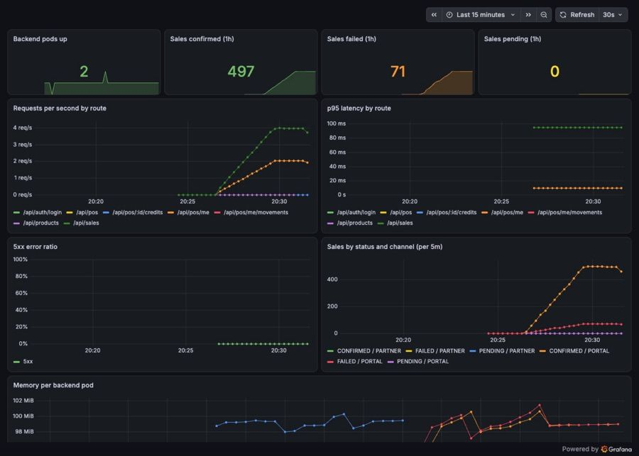
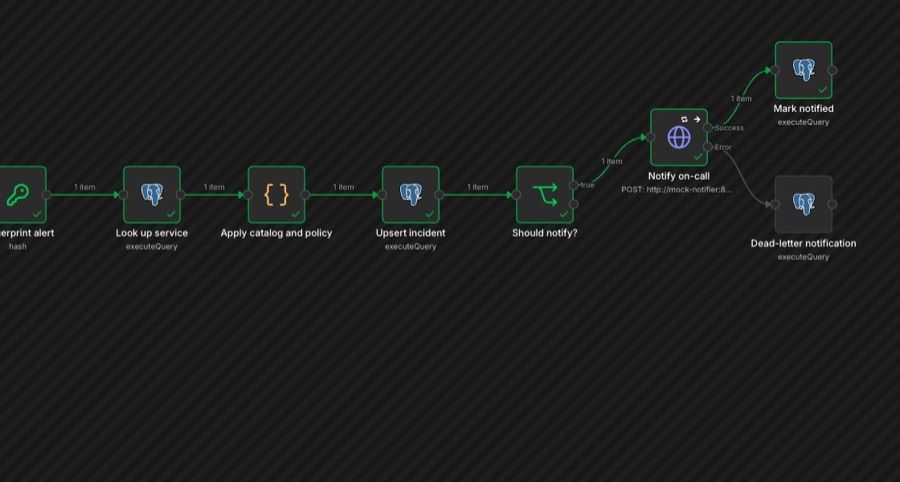
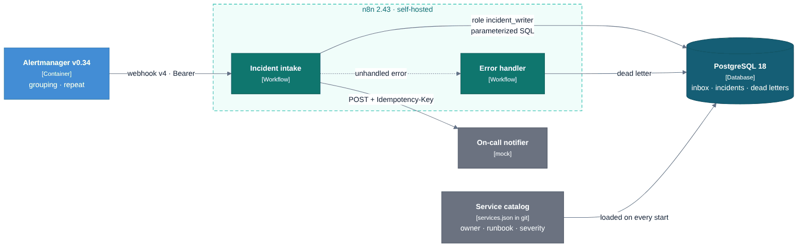
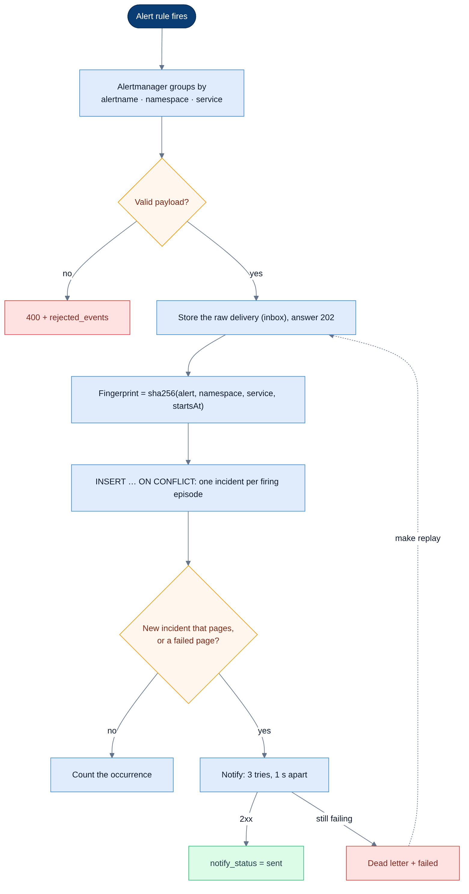

El problema
Las aplicaciones se caen, se configuran mal o reciben versiones rotas. El equipo debe enterarse rápido, avisar una sola vez al responsable correcto y recuperarse con un comando.
Lo que construí
- Un clúster kind de 3 nodos con Kustomize, Argo CD (GitOps) y Prometheus/Grafana como código; cargas endurecidas sin root.
- Simulacros: se encontró y corrigió una caída total que no generaba alerta; una versión rota se contuvo y se revirtió.
- Un flujo de incidentes en n8n detrás de Alertmanager: webhook autenticado, validación, deduplicación, enriquecimiento, reintentos y dead letters reprocesables.



Cómo está hecho


- Contenedores y orquestación
- Docker
- Kubernetes (kind, 3 nodes)
- Kustomize
- GitOps y CI/CD
- Argo CD 3.5
- GitHub Actions
- Observabilidad
- Prometheus 3
- Grafana 13
- Alertmanager 0.34
- Automatización de incidentes
- n8n 2.43
- PostgreSQL 18
- Node.js test runner
- 15 tests
- Infraestructura como código
- Terraform
- AWS VPC · EKS · RDS · ECR
- AWS provider 6
- Seguridad y políticas
- Kyverno 1.19
- cosign verification
- Checkov 3.4
- kubeconform
- NetworkPolicies
- Pod Security Admission
- ShellCheck
Decisiones y concesiones
Un incidente por episodio de alerta
La huella es un SHA-256 del nombre de la alerta, namespace, servicio y startsAt. Una restricción única con INSERT … ON CONFLICT serializa las entregas simultáneas; buscar y luego insertar desde el flujo tendría condición de carrera.
Los avisos fallidos se reintentan con la siguiente entrega
RETURNING old/new (PostgreSQL 18) le dice al flujo si una entrega volvió a poner en pendiente un aviso fallido. Una versión anterior en PostgreSQL 17 perdía ese valor y la prueba de reproceso lo detectó.
Una alerta que nunca podía dispararse
En el simulacro, al quitar todos los pods del backend también desaparecía la serie up, y la alerta de caída nunca se disparaba. Una regla absent() cubre ahora las caídas totales.
Cómo se comprobó
| Pruebas de integración del laboratorio | 15/15 en local y en CI |
|---|---|
| Simulacros de caída y versión rota | Postmortem publicado |
| Checkov sobre Terraform y manifiestos | 0 controles fallidos, excepciones documentadas |
| Simulacro con imagen sin firma | Rechazada en la admisión; la imagen firmada corre fijada a su digest |
| Evaluación de seguridad | Puertos del clúster abiertos a la red local: encontrado, corregido y verificado con make validate |
| Terraform para AWS | Validado en CI, nunca aplicado |
- 15 pruebas de integración del laboratorio, en verde en CI
- 5 entregas simultáneas de una alerta: un incidente, un aviso
- Argo CD recreó en 2 s un Deployment borrado
Alcance y próximos pasos
- El Terraform de AWS nunca se ha aplicado; tendría costo.
- El Prometheus del clúster aún no está conectado al Alertmanager del laboratorio.
- El notificador es simulado; no hay integración real de avisos.